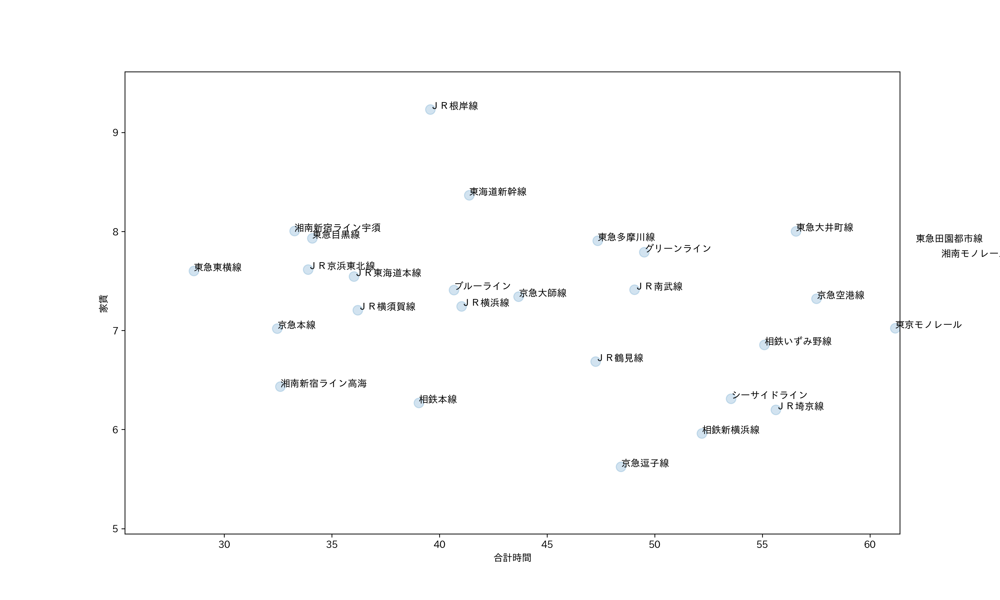
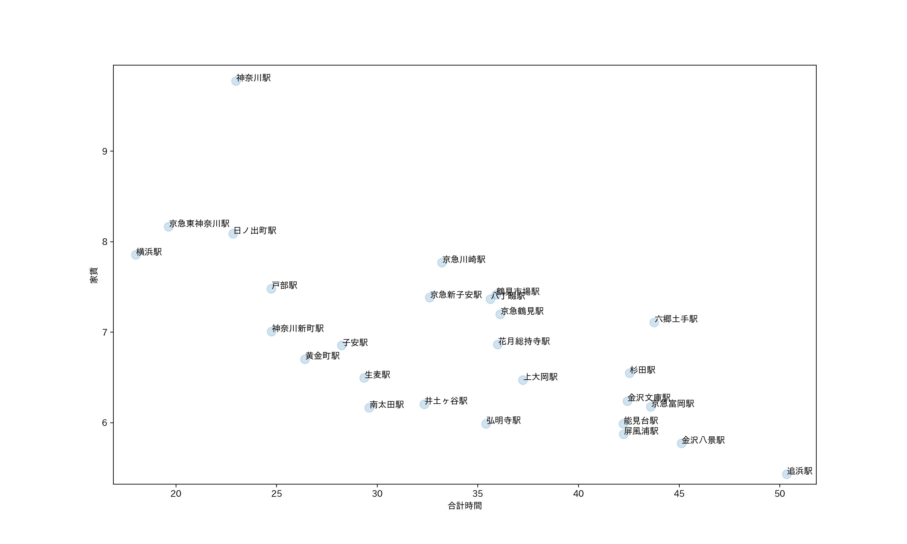

9班 観察結果
目次
路線の家賃と合計時間の関係

縦軸に家賃、横軸を合計時間とした散布図を用いて路線の家賃と合計時間の関係をグラフにした。
その結果みなとみらい線が頭一つ抜けて合計時間が短いことがわかった。
しかし家賃があまりにも他より高いため選択肢から外す。
また、通学にあたって合計時間が長いと大変なので60分以上もおすすめしにくいため、
20〜60分の部分を拡大する。

この散布図から湘南新宿ライン高海、京急本線、相鉄本線が良さそうに思える。
この中で一番本数が出ている路線が京急本線ためおすすめできる。
京急本線
再び縦軸を家賃、横軸を合計時間の散布図で今度は京急本線の駅の平均を表した。
ここから神奈川新町駅が良いと考える。
理由の一つに合計時間が短い点にある。
合計時間が25分以下の駅で家賃平均が7万以下なのは神奈川新町のみのため。
また、価格が似ている京急鶴見などよりも時間が短い。
２つ目の理由として出ている本数が多い点にある。
生麦などの6万代のエリアではエアポート急行が止まらず、本数が半分になってしまう。
そのため神奈川新町がおすすめのエリアである。
ソースコード
- import pandas as pd # データ分析に用いるライブラリ
- import matplotlib.pyplot as plt # グラフ表示に用いるライブラリ
- from mpl_toolkits.mplot3d import Axes3D
- pd.set_option('display.unicode.east_asian_width', True) # 表示のずれを少し緩和
- plt.rcParams['font.family'] = 'IPAexGothic' # グラフ表示におけるフォントの指定
- data_path = "data.csv"
- df_data = pd.read_csv(data_path, encoding="utf-8-sig")
- print(df_data.columns)
- x = df_data.groupby("路線").mean().loc[:, "合計時間"]
- y = df_data.groupby("路線").mean().loc[:, "家賃"]
- plt.scatter(x, y, s=100, alpha=0.2)
- for xx, yy, ss in zip(x, y, x.index):
- plt.text(xx, yy, ss)
- plt.xlabel("合計時間")
- plt.ylabel("家賃")
- plt.show()
- mask = df_data.loc[:, "路線"] == "京急本線"
- x = df_data[mask].groupby("駅").mean().loc[:, "合計時間"]
- y = df_data[mask].groupby("駅").mean().loc[:, "家賃"]
- plt.scatter(x, y, s=100, alpha=0.2)
- for xx, yy, ss in zip(x, y, x.index):
- plt.text(xx, yy, ss)
- plt.xlabel("合計時間")
- plt.ylabel("家賃")
- plt.show()